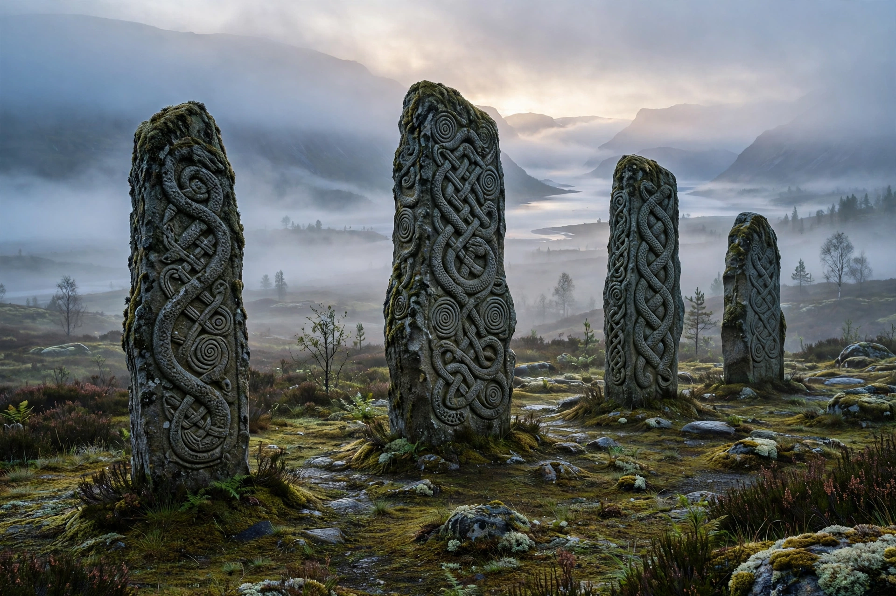

Were runes a secret magic code, or just an alphabet? The short answer is that they were an alphabet first, and the magic came later. People who carved runes used them to write names, mark property, and remember the dead.
The word itself gives the game away. It comes from an old Germanic word that meant secret, whisper, or hidden talk. If you want to test the alphabet for yourself, try a tool that turns English into runes and watch ordinary words change into carved letters.
This guide walks through the real history. It covers the 24 letters of the Elder Futhark, the oldest objects that carry runes, and one famous inscription read word by word. It ends with a simple way to write your own name in runes.
The name comes from Proto-Germanic *rūnō, which meant secret, mystery, or a quiet talk between two people. Old English kept the same sense. Its word rūn meant whisper, mystery, or secret.
That meaning is the reason the magic idea stuck. A word that means secret sounds like it hides power. The carvers did use runes in charms and on amulets. Most runes were plain writing, though, and the plain uses far outnumber the magic ones.
The Roman writer Tacitus wrote near the year 98 about Germanic priests who cut marks on wood slips and cast them as lots. Scholars still debate what he saw. His account is the earliest hint that rune-like marks had a ritual use.
Runes are built from straight lines. Curves are rare, and circles never appear. The shapes fit the tools that made them. A knife cuts a straight line in wood with ease, and a chisel does the same in stone.
Carvers also avoided flat lines that run with the grain of wood. A flat cut would hide in the grain and split the wood. That is why runes lean on upright stems with branches that rise at an angle. The look of runes is a craft choice, not a magic one.
Carvers sometimes joined two runes into one mark, called a bindrune. A bindrune often joined the first letters of two names, or a pair of letters in a single word. Modern designers use bindrunes as monograms, but old bindrunes were a space-saving habit.
The Elder Futhark is the oldest runic alphabet. It has 24 letters and was used from about the year 150 to about the year 800. Its name comes from its first six letters, F, U, Th, A, R, and K. The letters fall into three groups of eight, and each group is called an aett.
Each rune had a name as well as a sound. The names come from later rune poems and from Gothic letter names, so scholars mark them as reconstructions. Fehu meant cattle, which was wealth in a farming world. Uruz meant the wild ox, and ansuz meant a god.
The first eight runes deal with wealth, travel, and gifts. They open the alphabet with the stuff of daily life.
The middle eight runes deal with hardship, weather, and time. They are the stern half of the alphabet.
The last eight runes deal with people, law, and home. They close the alphabet with the human world.
Two runes still puzzle scholars. Perthro and algiz have no agreed meaning. Old poems give no clear answer for them, and the names are best guesses.
We know the rune names from poems written down long after the Elder Futhark faded. The Old English rune poem, the Norwegian rune poem, and the Icelandic rune poem each give a short verse for every rune. The Old English poem was written down in the 8th or 9th century, and it runs to 29 stanzas. The verses turn each name into a small lesson.
"Wealth is a comfort to all men; yet must every man bestow it freely, if he wish to gain honour in the sight of the Lord."
Bruce Dickins translation (1915) of the Old English Rune Poem, first stanza, on feoh.
That verse is about the first rune, feoh, which meant wealth. It calls wealth a comfort, then warns that it must be given away. The rune poems are not spell books. They are memory aids that teach what each letter stands for.
Runes were carved on combs, swords, brooches, and stones. The earliest ones are short. A name, a word, or a mark of ownership was often all that fit.
Notice how plain these early texts are. No spells, no curses, no secret codes. The first rune writers used their letters the way we use a pen, to label a thing or claim a piece of work.
The clearest proof that runes were ordinary writing sits on a gold horn. The horn is one of the Golden Horns of Gallehus, found in southern Denmark. It dates to the early 400s. A craftsman signed his work in five plain words.
ᛖᚲ ᚺᛚᛖᚹᚨᚷᚨᛊᛏᛁᛉ ᛬ ᚺᛟᛚᛏᛁᛃᚨᛉ ᛬ ᚺᛟᚱᚾᚨ ᛬ ᛏᚨᚹᛁᛞᛟ
Letters: ek hlewagastiz holtijaz horna tawido
Meaning: "I, Hlewagastiz Holtijaz, made the horn."
That is a full sentence, and it is also the earliest line of alliterative verse in the runic record. Hlewagastiz did not cast a spell. He signed his work the way a potter signs a pot. His name lived on because the words could be read and copied.
The two horns were found about a century apart. A peasant girl named Kirsten Svendsdatter found the longer horn in a field in 1639. A farmer found the shorter horn in 1734, about fifteen metres from the first find. Both horns were made of sheet gold in the early 400s.
The horn itself is gone. A goldsmith named Niels Heidenreich stole both horns from the royal collection in 1802 and melted them for gold. All we have now are drawings made before the theft. The runes survived because people wrote the words down while the gold still existed.
The most famous runestone stands by a church at Rök, in Sweden. It was carved in the early 800s. It carries about 760 runes across five faces, the longest runic text on stone. A father named Varin raised it for his dead son, Vámóðr.
The stone opens with plain words: "In memory of Vámóðr stand these runes." Varin then turns to riddles, hero tales, and secret cipher runes. One verse tells of Theodoric the Great, a king who died in 526. The stone mixes grief, myth, and puzzle craft in one monument.
The Rök stone shows both sides of runes at once. The open lines are public writing that any reader of the time could follow. The cipher lines were a game for skilled readers. Magic and message sat on the same stone.
Writing a modern name in Elder Futhark takes three steps. First, say the name aloud and split it into sounds. Second, match each sound to the nearest rune. Third, write the runes in order and read them back.
Some letters have no exact match. The letter C can be K or S, so pick the rune that fits the sound. The letter J has no close twin, and most writers use jera for it, even though its old sound was closer to Y. The letter X is two sounds, K and S, so it needs two runes.
Take the name Emma. Say it aloud and you hear four sounds, E, M, M, and A. Ehwaz gives the E, mannaz gives the M twice, and ansuz gives the A. The result reads ᛖᛗᛗᚨ, and it sounds out letter by letter.
Old carvers often wrote a doubled sound once, but modern renderings keep both letters. Either choice is fine, and old stones show both habits. The sound is what matters, not the spelling.
The examples below are ones I wrote myself. They are not outputs from any translator tool. They show how the sound matching works.
If you want to check your own name, you can see it written in Elder Futhark runes with a free online tool. Type the name, read the runes back, and sound them out. The tool does the matching for you.
The Elder Futhark gave way to shorter alphabets. Anglo-Saxon England kept a longer row called the futhorc, which grew to 33 letters at its fullest. Viking Age Scandinavia cut the row down to 16 letters, the Younger Futhark. Fewer letters meant each rune had to cover more sounds.
Runes faded as the Latin alphabet spread with the church. They held on longest in remote places. Farmers in Dalarna, Sweden, still used runes for everyday notes into the 1800s. Today runes live on in tattoos, jewellery, games, and fantasy books.
The old letters also live on inside English. The thorn rune, þ, stood for the th sound, and printers once used it in words like ye, which was really the. The word fee comes from feoh, the first rune. Runes never left the language, even after the letters fell out of use.
Runes were not a code that only priests could read. They were the letters of farmers, smiths, and grieving fathers. The magic stories grew up around them later, and the stories are part of the fun. The letters themselves are plain, and that is what makes them last.
Start with the 24 letters above and the examples in this guide. Then try your own name and a short sentence. For more tools in the same family, start at the Quirky Translators home page and pick the style that fits your text.